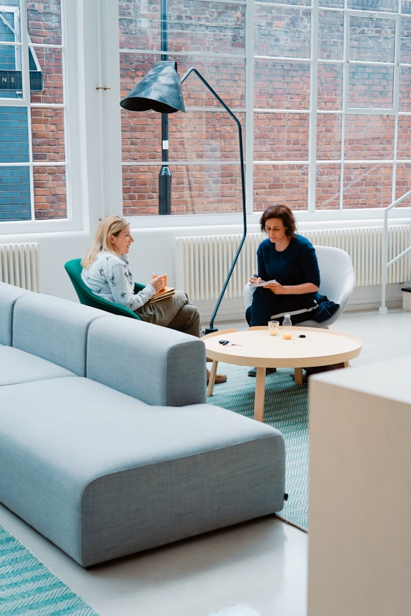

Teste de Perfil Profissional · Gratuito
Teste de
Perfil Profissional do Terapeuta
Descubra qual o seu perfil profissional, onde está o seu gargalo e o que fazer para atingir o próximo nível.
Pergunta 1 de 10
Qual é o valor que você cobra por sessão individual?
Pergunta 2 de 10
Quantos atendimentos você realiza por mês?
Pergunta 3 de 10
Como são seus ambientes de influência profissional?
Afinal, somos a média das pessoas com quem mais convivemos.
Pergunta 4 de 10

Você já leu e aplica conceitos do best-seller "Desbloqueio e o Poder da sua Mente"?
O livro mais vendido do Brasil sobre intervenção terapêutica rápida.
Pergunta 5 de 10
Você tem um nicho definido e produz conteúdo estratégico para seu Instagram profissional?
Pergunta 6 de 10
Você usa Inteligência Artificial no seu trabalho como terapeuta?
Pergunta 7 de 10
Você cuida de si mesmo passando por processos terapêuticos e cuidando da própria mente? Com qual frequência?
Pergunta 8 de 10
Você tem segurança para dar garantia de resultado para seus clientes?

Pergunta 9 de 10Como está seu próprio bem-estar nos últimos 3 meses?
Pergunta 10 de 10
Quando você olha para os resultados dos seus clientes, como se sente com mais frequência?
Seu perfil está pronto.
Antes de revelar, precisamos de um endereço para enviar seu diagnóstico completo e material complementar direto no WhatsApp.
Seus dados ficam só com a OMNI Brasil. Sem spam. Só conteúdo relevante para o seu perfil.
Resultado enviado
Recebemos suas respostas.
Você receberá seu resultado no WhatsApp em instantes. Fique de olho na mensagem.
OMNI Brasil · Transformação que se prova.
Seu Perfil